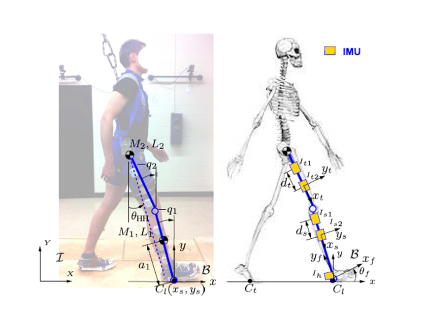

Inertial Sensor-Based Slip Detection
in Human Walking
Robotics Automation and Mechatronics (RAM) Laboratory
@ Rutgers University-New Brunswick
Advisor
Prof. Jingang Yi
What I learnt?
Slip is one of the leading causes of fall-related injuries among occupational and elderly population. Existing research supports proactive slip and fall prevention approaches, while active strategies remain underdeveloped. Development of active slip-induced fall prevention systems requires fast, effective slip detection.
Luckily, I was excitingly admitted to join the RAM lab, participating this great project. Pre-studying relevant materials and collaborated with the project team really grew up my determination on pursuing Robotics and Mechanical Engineering related field goals.
Now, let me briefly introduce what I gained from this vaulable experience and what the project team finally achieved.

A method that includes a new slip indicator and a slipping dynamics estimator was developed, which is inspired and extended from the bipedal model.
An integrated sensing suite for the slip detection system is designed. The sensor suite includes an insole force/torque sensor and a set of five small IMU units. The IMU includes a triaxial accelerometer, triaxial gyroscope, and three magnetometers and acts as an attitude and heading reference system (AHRS).
The IMU outputs directly provide the attitude angles for the thigh and shank poses. Five IMUs are attched to the lower limb.
A simplified bipedal model is used to characterize human walking with slips in a sagittal plane. A wooden platform is bulit up and the human subjects walked on the platform in the laboratory for data collection.
Two-link slipping leg dynamics and the motion equations was successfully calculated using the Lagrangian mechanics. The slip detection begins only the foot slip start in real time. Block diagram of the schematics of slip-detection algorithm is shown below that runs simultaneously for each individual leg.

To know more about the details, please check out this posted paper:
M. Trkov, K. Chen, J. Yi and T. Liu, Inertial Sensor-Based Slip Detection in Human Walking. in IEEE Transactions on Automation Science and Engineering, vol. 16, no. 3, pp. 1399-1411, July 2019, doi: 10.1109/TASE.2018.2884723.